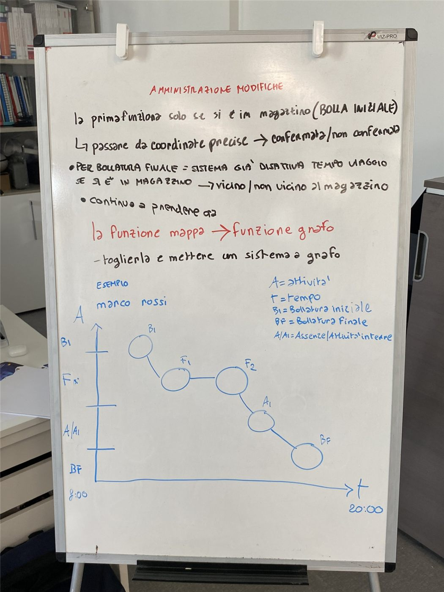
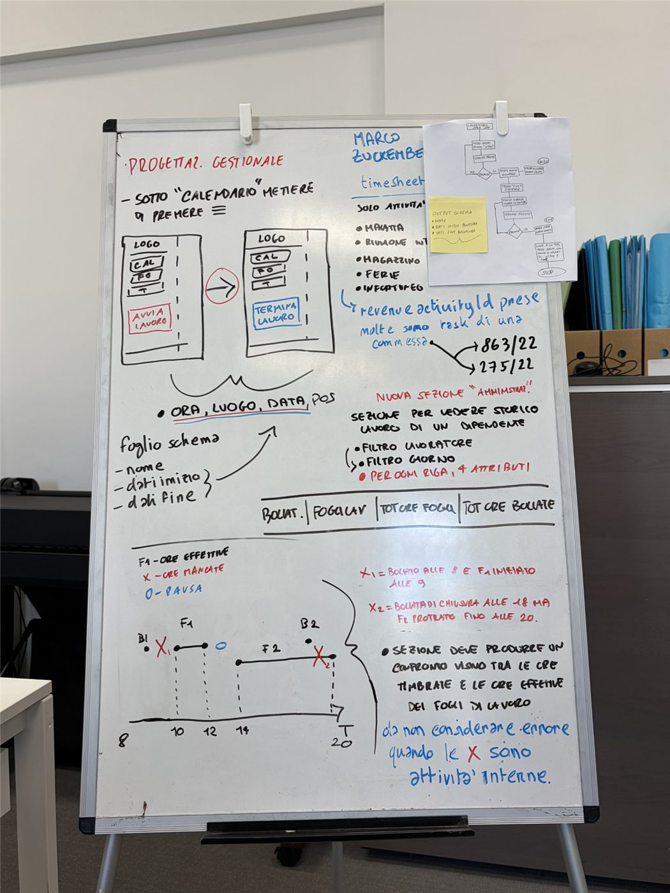
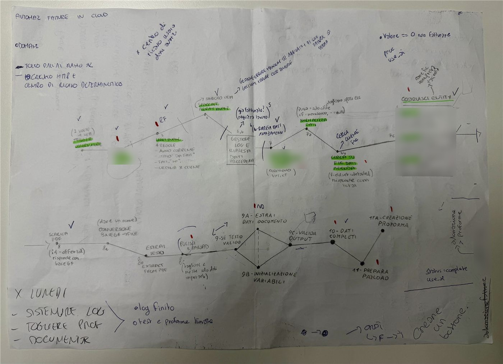
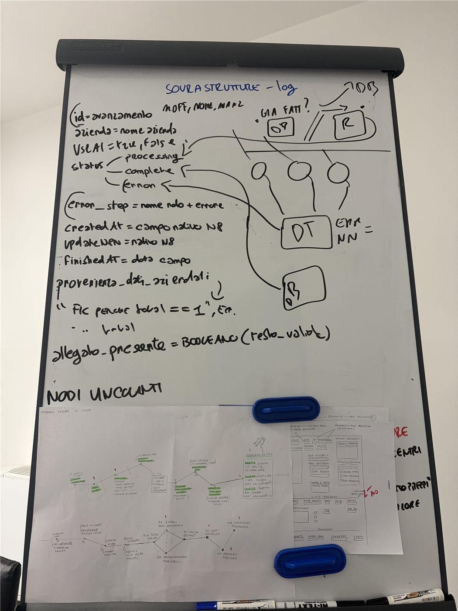

Marco Scarfò
Software e AI developer
Laureato in ICT, oggi lavoro in azienda su automazioni e software con l'AI. Intanto frequento la magistrale in Intelligenza Artificiale al Dipartimento di Informatica.


All'università ho imparato a progettare sistemi partendo dalle persone che li useranno. In azienda lo applico ai processi di tutti i giorni, dalle ore dei tecnici in cantiere alle fatture.
Con cosa lavoro
Per le automazioni uso soprattutto n8n, collegato ai gestionali con API e webhook. Il codice lo scrivo in JavaScript, Python, PHP e SQL.
Sul lato AI lavoro con i modelli di OpenAI, Whisper per la voce e la RAG quando un modello deve rispondere su dati aziendali. Le interfacce le disegno prima a carta e penna, e solo dopo in Figma.
La mia tesi di laurea
Dataware
«Accetto i termini e le condizioni» è stata definita la bugia più grande di Internet. Dataware legge privacy policy e termini di servizio al posto tuo e ti spiega, criterio per criterio, cosa stai accettando.
Scegli una piattaforma
Ogni criterio vale da 1 (dati tutelati) a 5 (dati a rischio), quindi la somma dei dieci va da 10 a 50.
Sessanta piattaforme lette a mano
Una raccolta di privacy policy classificate per rischio non esisteva, quindi l'ho costruita io. Ogni piattaforma è valutata su dieci criteri presi dal GDPR e dai termini di servizio.
Le policy usano tutte lo stesso linguaggio rassicurante, e un modello che guarda solo le parole si ferma a un F1 di 0.48. Con segnali costruiti sui dieci criteri sale a 0.64. L'F1 va da 0 a 1 e dice quanto spesso il modello indovina la classe di rischio.
Il prototipo RAG, costruito in n8n, ragiona in un altro modo. Davanti a una policy nuova cerca le piattaforme già valutate più simili e su quelle motiva un punteggio per ogni criterio. Su dieci piattaforme mai viste ha indovinato la classe in nove casi.
La collezione
Ogni progetto ha la sua figurina, dai lavori in azienda a quelli nati all'università. Aprila per vedere immagini, dettagli e il mio ruolo. Nei lavori per aziende, nomi di clienti e sistemi sono omessi.
Trascina le carte o usa le frecce, poi fai clic su quella in primo piano per aprirla.
Prima su carta
Ogni progetto parte da chi vive il processo ogni giorno, per capire dove perde tempo e cosa invece funziona già. Prima di toccare un dato mi chiedo da dove arriva, chi potrà vederlo e quanto a lungo resterà.
Il passo successivo è un foglio A3 o una lavagna. Lì metto in fila le persone coinvolte, le eccezioni e il percorso dei dati, compreso quello che deve succedere quando qualcosa va storto. Lo strumento lo scelgo solo quando il problema è chiaro.
Codice e workflow arrivano dopo, con l'intelligenza artificiale solo dove porta un vantaggio vero. Alla fine scrivo la relazione tecnica e, quando serve, una guida d'uso, così chi arriva dopo può mantenere il sistema.

